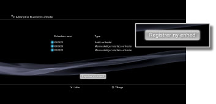

Indstillinger > Tilbehørsindstillinger > Administrer Bluetooth® enheder
Administrer Bluetooth® enheder
Gør det muligt at registrere eller parre Bluetooth®-kompatible enheder på PS3™-systemet. Du kan også administrere Bluetooth®-enheder, der opretter forbindelse til dit system.
Registrering af en Bluetooth®-kompatibel enhed
1. |
Klargør en Bluetooth®-kompatibel enhed og en Pass nøgle. |
|---|---|
2. |
Vælg |
3. |
Vælg [Administrer Bluetooth® enheder]. |
4. |
Vælg [Registrer ny enhed].  |
5. |
Vælg [Begynd søgning]. |
6. |
Vælg den enhed, der skal registreres eller parres med PS3™-systemet. |
 (Indstillinger) > (Tilbehørsindstillinger).
(Indstillinger) > (Tilbehørsindstillinger).Tips
- Når du bruger det maksimale antal trådløse controllere, skal du slette de enheder, som du ikke bruger, på listen over registrerede enheder for at gøre plads til den nye Bluetooth®-enhed.
- Yderligere oplysninger om den Bluetooth®-kompatible enhed findes i den vejledning, der fulgte med enheden.
Administration af Bluetooth®-enheder
Kontrollér oplysningerne om Bluetooth®-kompatible enheder,der er tilsluttet til dit PS3™-system, eller tilkobl og frakobl enheder. Vælg den enhed, der skal administreres, og tryk på  -tasten for at vælge indstillinger i indstillingsmenuen.
-tasten for at vælge indstillinger i indstillingsmenuen.